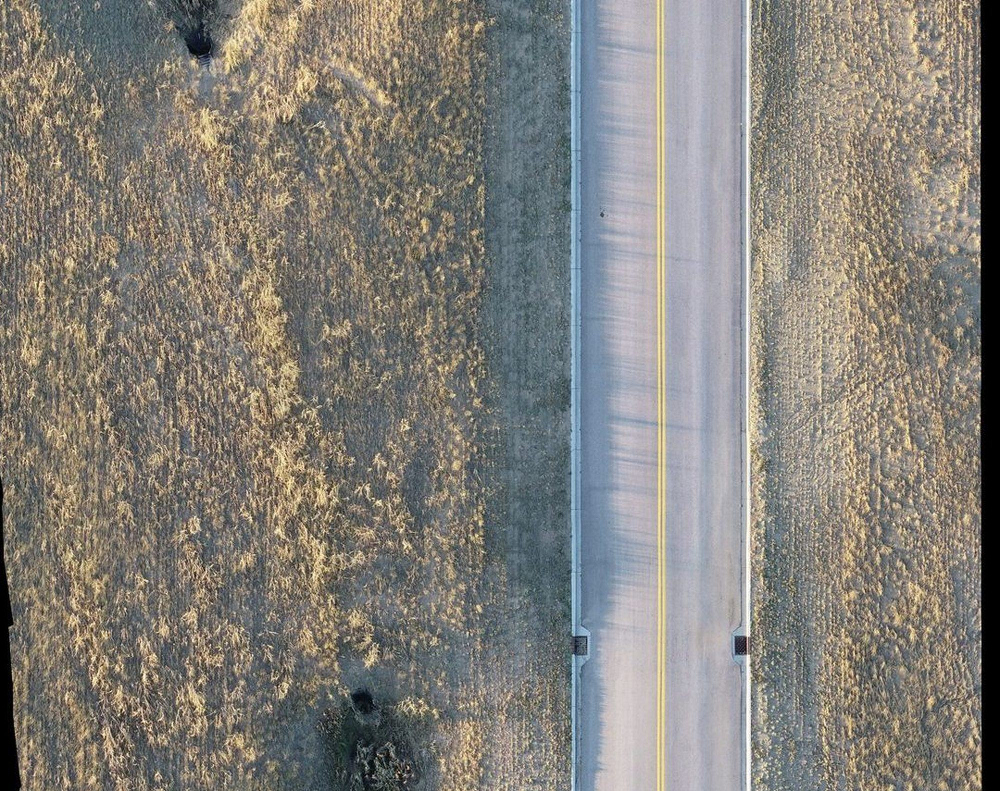

ECSC Service Road Orthomosaic

Overview
Compared two orthomosaic captures of the Energy Capital Sports Complex service road to inventory drainage, lighting, and access infrastructure. Examined how lighting, vegetation growth, and surface contrast between captures shifted detection rates by feature type. The 2019 fresh-asphalt phase outperformed 2023 for manholes despite a narrower footprint.
Processing
Methods
- Feature digitization in Pix4Dsurvey over Pix4Dmatic orthomosaics
- Categorical breakdown by feature type (drains, poles, manholes)
- Diagnosis of capture-day conditions affecting vectorization
- Recommended flight-planning adjustments for repeat capture
Deliverables
- Comparative feature inventory (2019 vs 2023)
- Methods report
Key Technical Challenge
Maturing roadside vegetation between captures partially occluded drains and pole bases by 2023, reducing detection in features that had been cleanly identifiable two years prior.
Lessons Learned
Pre-flight vegetation trimming and flying closer to solar noon under overcast conditions would meaningfully improve repeat-capture detection rates. Pushing forward/side overlap above 75/80% adds resilience where shadows and occlusion are unavoidable.